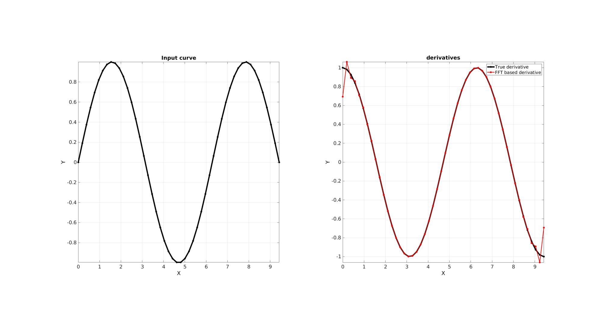
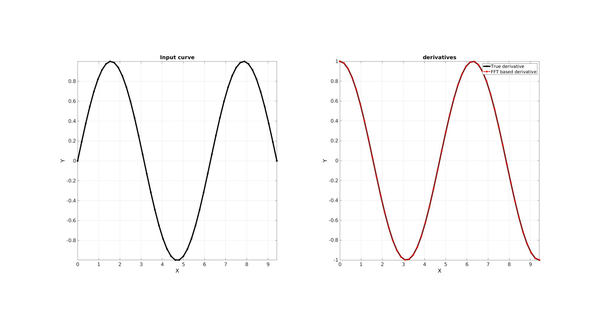
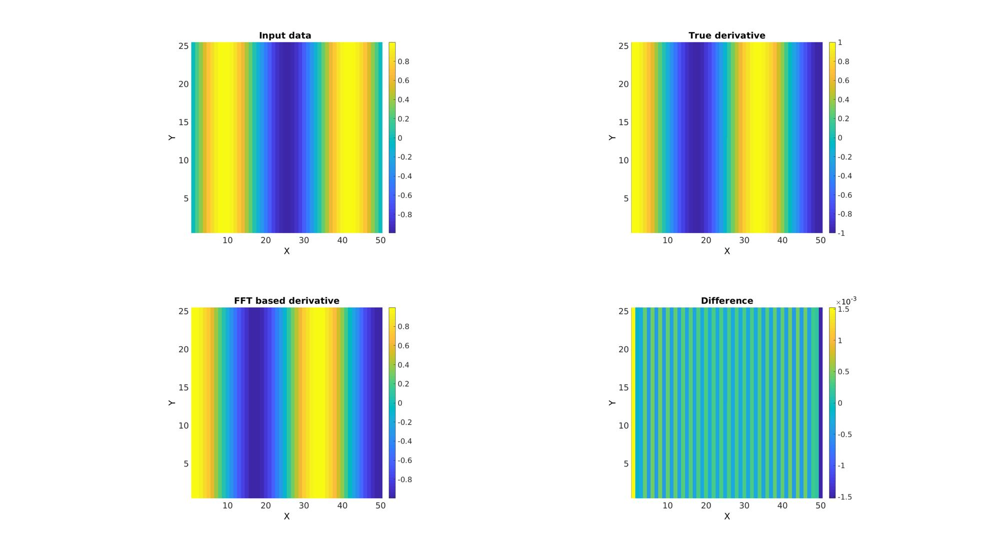

FFT_derivative
Below is a demonstration of the features of the FFT_derivative function
Contents
clear; close all; clc;
Syntax
[dY,fft_dY]=FFT_derivative(dt,Y,dimDer,derOrder,numPad);
Description
This function uses the Fourier transform method to compute the derivative of order derOrder for the input data Y, allong direction dimDer. The array X
Examples
Plot settings
fontSize=20; lineWidth=5;
FFT derivatives of evenly spaced vector data
Create example data
n=50; %Number of samples x=linspace(0,3*pi,n); %x-vector y=sin(x); %y-vector dy=cos(x); %True derivative for comparison
Use FFT_derivative to compute the derivative
dimDer=2; %Direction for derivative derOrder=1; %Order of derivative dt=x(2)-x(1); dy_fft=FFT_derivative(dt,y,dimDer,derOrder);
Visualize data
cFigure; subplot(1,2,1); hold on; title('Input curve'); xlabel('X','FontSize',fontSize); ylabel('Y','FontSize',fontSize); plot(x,y,'k.-','lineWidth',lineWidth,'MarkerSize',25); axis square; axis tight; grid on; box on; set(gca,'FontSize',fontSize); subplot(1,2,2); hold on; title('derivatives'); xlabel('X','FontSize',fontSize); ylabel('Y','FontSize',fontSize); hp1=plot(x,dy,'k.-','lineWidth',lineWidth,'MarkerSize',25); hp2=plot(x,dy_fft,'r.-','lineWidth',lineWidth/2,'MarkerSize',25); axis square; axis tight; grid on; box on; set(gca,'FontSize',fontSize); legend([hp1 hp2],{'True derivative','FFT based derivative'}); drawnow; %
Using extrapolation to suppress edge effects
Use FFT_derivative to compute the derivative
dimDer=2; %Direction for derivative derOrder=1; %Order of derivative numPad=ceil(size(y,dimDer)/4); dt=x(2)-x(1); dy_fft=FFT_derivative(dt,y,dimDer,derOrder,numPad);
Visualize data
cFigure; subplot(1,2,1); hold on; title('Input curve'); xlabel('X','FontSize',fontSize); ylabel('Y','FontSize',fontSize); plot(x,y,'k.-','lineWidth',lineWidth,'MarkerSize',25); axis square; axis tight; grid on; box on; set(gca,'FontSize',fontSize); subplot(1,2,2); hold on; title('derivatives'); xlabel('X','FontSize',fontSize); ylabel('Y','FontSize',fontSize); hp1=plot(x,dy,'k.-','lineWidth',lineWidth,'MarkerSize',25); hp2=plot(x,dy_fft,'r.-','lineWidth',lineWidth/2,'MarkerSize',25); axis square; axis tight; grid on; box on; set(gca,'FontSize',fontSize); legend([hp1 hp2],{'True derivative','FFT based derivative'}); drawnow;
FFT derivatives of multi-dimensional data
Create example data array
% Expand x-data from previous example into array nRep=25; X=x(ones(nRep,1),:); %X-data array Y=sin(X); %Y-data array DY=cos(X); %True derivative
dimDer=2; derOrder=1; numPad=ceil(size(y,dimDer)/4); dt=x(2)-x(1); dY_fft=FFT_derivative(dt,Y,dimDer,derOrder,numPad);
cFigure; subplot(2,2,1); hold on; title('Input data ') xlabel('X','FontSize',fontSize); ylabel('Y','FontSize',fontSize); imagesc(Y); axis square; axis tight; grid on; set(gca,'FontSize',fontSize); colorbar; subplot(2,2,2); hold on; title('True derivative') xlabel('X','FontSize',fontSize); ylabel('Y','FontSize',fontSize); imagesc(DY); axis square; axis tight; grid on; set(gca,'FontSize',fontSize); colorbar; subplot(2,2,3); hold on; title('FFT based derivative') xlabel('X','FontSize',fontSize); ylabel('Y','FontSize',fontSize); imagesc(dY_fft); axis square; axis tight; grid on; set(gca,'FontSize',fontSize); colorbar; subplot(2,2,4); hold on; title('Difference') xlabel('X','FontSize',fontSize); ylabel('Y','FontSize',fontSize); imagesc(DY-dY_fft); axis square; axis tight; grid on; set(gca,'FontSize',fontSize); colorbar; drawnow;

GIBBON www.gibboncode.org
Kevin Mattheus Moerman, gibbon.toolbox@gmail.com
GIBBON footer text
License: https://github.com/gibbonCode/GIBBON/blob/master/LICENSE
GIBBON: The Geometry and Image-based Bioengineering add-On. A toolbox for image segmentation, image-based modeling, meshing, and finite element analysis.
Copyright (C) 2019 Kevin Mattheus Moerman
This program is free software: you can redistribute it and/or modify it under the terms of the GNU General Public License as published by the Free Software Foundation, either version 3 of the License, or (at your option) any later version.
This program is distributed in the hope that it will be useful, but WITHOUT ANY WARRANTY; without even the implied warranty of MERCHANTABILITY or FITNESS FOR A PARTICULAR PURPOSE. See the GNU General Public License for more details.
You should have received a copy of the GNU General Public License along with this program. If not, see http://www.gnu.org/licenses/.